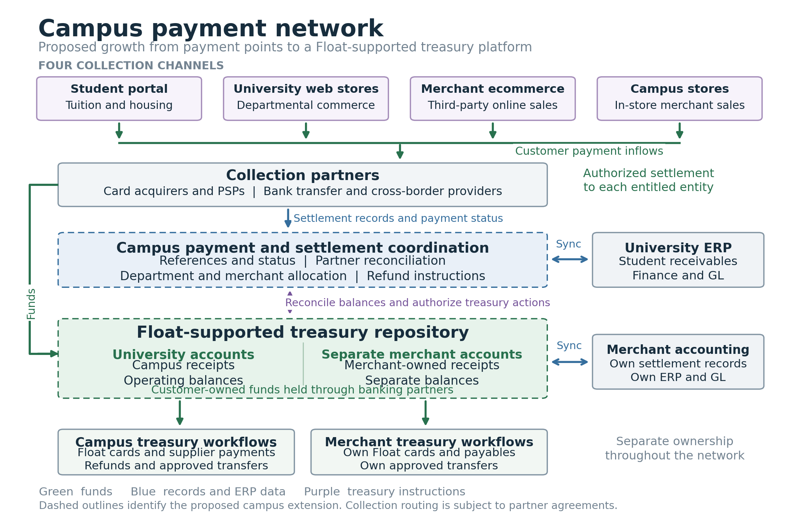

A campus is a connected payment environment
Tuition, housing, university services and merchant sales begin at different payment points. Their financial consequences continue beyond checkout: receipts arrive, settlement batches are reconciled, balances are allocated and accounting records are updated. Seen together, these activities form a campus payment network rather than a set of isolated transactions.
Four collection inflows
The student service portal brings together tuition and housing payments. University web stores support departmental commerce, including events, courses and services. Third-party merchant ecommerce connects independent online sellers with the campus community, while campus merchant stores generate in-person sales through checkout and point-of-sale systems.
Each channel has its own customer experience and collection arrangements. Across them, a recurring need is to connect the original charge or order with payment status, settlement evidence and the account entitled to receive the funds.
From payment activity to a treasury relationship
For Float, this environment represents a potential growth segment adjacent to corporate cards, business accounts and payment services. The broader relationship extends from individual spending activity to the coordination of incoming receipts, retained operating balances and subsequent payments. Merchant acceptance would involve collection partners; the campus-wide coordination described here is a potential extension of that foundation.
A Float-supported treasury repository describes the account environment where entitled campus participants could receive, retain and use operating receipts. University balances and independent merchant balances remain separately owned. Retaining receipts connects incoming payments with continuing treasury activity; those customer funds remain distinct from Float’s own income.

Reconciliation and ERP complete the connection
Collection partner reconciliation links payment references, provider records, fees and deposits. ERP integration connects those movements with student receivables, departmental accounting and the general ledger, while merchants retain their own books. This creates continuity between a payment at the edge of the campus and the financial records used by treasury and operations.
The potential growth segment lies in the whole financial relationship: campus commerce feeding collection, settlement, retained operating balances and authorised spending, connected through treasury workflows and ERP.